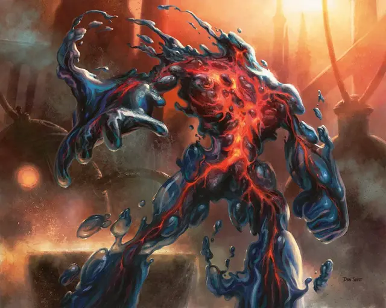

Аномалия пылающего нароста
Blistercoil Weird
Средний Элементаль, хаотично-нейтральный

Класс Доспеха 13
Хиты 45 (7к8 + 14)
Скорость 40 футов, плавая 60 футов
| мод | спас | ||
|---|---|---|---|
| СИЛ | 16 | +3 | +3 |
| ЛОВ | 16 | +3 | +3 |
| ТЕЛ | 15 | +2 | +2 |
| мод | спас | ||
|---|---|---|---|
| ИНТ | 5 | −3 | −3 |
| МДР | 10 | +0 | +0 |
| ХАР | 7 | −2 | −2 |
Сопротивление урону огонь, холод; дробящий, колющий, рубящий от немагических атак
Иммунитет к урону яд
Иммунитет к состояниям бессознательность, захват, истощение, окаменение, опутанность, отравление, паралич, сбивание с ног
Чувства тёмное зрение 60 футов, пассивное Восприятие 10
Языки Драконий
Опасность 4 (1100 опыта)
Бонус мастерства +2
Особенности
Кормление огнем. Если аномалия получает урон огнем от заклинания или другого магического эффекта, его размер увеличивается на одну категорию. Если аномалии не хватает места для увеличения размера, она достигает максимально возможного размера в доступном пространстве. Пока аномалия является существом Большого или больше размера, оно совершает с преимуществом проверки Силы и спасброски Силы. Если аномалия начинает свой ход имея Гигантский размер, оно высвобождает накопленную энергию в виде взрыва. Каждое существо в пределах 30 футов от аномалии должно совершить спасбросок Ловкости Сл 12, получая 28 (8к6) урона огнём при провале или половину этого урона при успехе. Взрыв зажигает легковоспламеняющиеся предметы в области, которые не носят и не несут. Затем размер аномалии становится Средним.
Форма огня и воды. Аномалия может перемещаться в пространстве шириной всего в 1 дюйм, не сжимаясь. Кроме того, аномалия может войти в пространство враждебного существа и там остановиться. В первый раз, когда аномалия входит в пространство другого существа за ход, это существо получает 5 (1к10) урона огнём и загорается; пока кто-нибудь действием не потушит огонь, горящее существо получает 5 (1к10) урона огнём в начале каждого своего хода.
Нагрев тела. Существо, которое касается аномалии или попадает по ней рукопашной атакой, находясь в пределах 5 футов от него, получает 5 (1к10) урона огнем.
Свечение. Аномалия излучает яркий свет в радиусе 30 футов и тусклый свет в радиусе еще 30 футов.
Действия
Удар. . Рукопашная атака оружием: +5 к попаданию, досягаемость 5 фт., одна цель. Попадание: 7 (1к8 + 3) дробящего урона плюс 7 (2к6) урона огнём, или 11 (2к8 + 3) дробящего урона плюс 14 (4к6) урона огнём, если аномалия существо Большого размера или больше.
Описание
Аномалии пылающего нароста — это антропоморфный зверь, созданное из воды и расплавленной магмы. Он поглощает энергию магического огня, в результате чего его похожее на слизь тело увеличивается в размерах. Во время одного катастрофического эксперимента исследователи Иззета наблюдали, как странная аномалия увеличивалась в размерах, и заполнила шестиэтажную мастерскую, прежде чем высвободила всю свою избыточную энергию в результате огромного взрыва и после этого вернулась к своим первоначальным размерам.
Аномалии Иззет
Аномалии - это продукты экспериментов Лиги Иззетов, направленные на объединение двух противоположных типов элементалей в надежде создать элементалей, которые были бы более стабильными, чем обычно, и более легкими для контроля. Как это обычно бывает с экспериментами Иззетов, результат оказался прямо противоположным. Аномалии еще более дикие и непредсказуемые, чем любой элементаль. Однако, они могут стать мощными существами-хранителями, и их можно заставить сражаться от имени своего создателя.
Элементарная природа. Аномалии Иззетов не нужен воздух, еда, питье или сон.